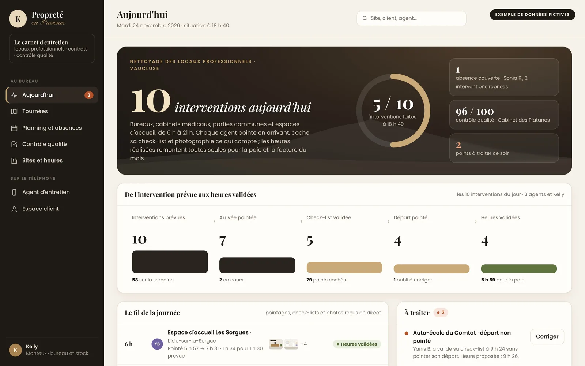
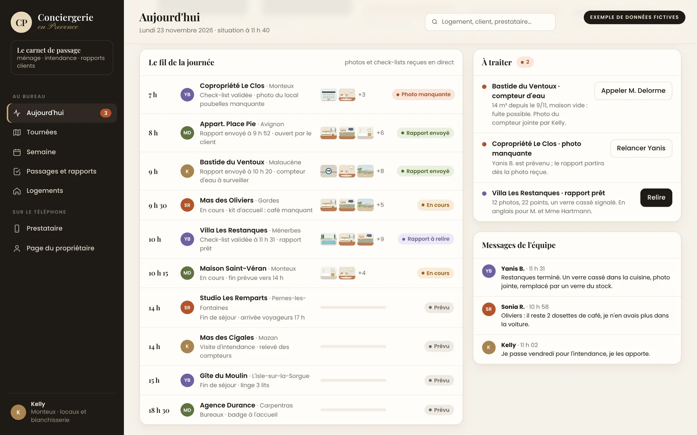
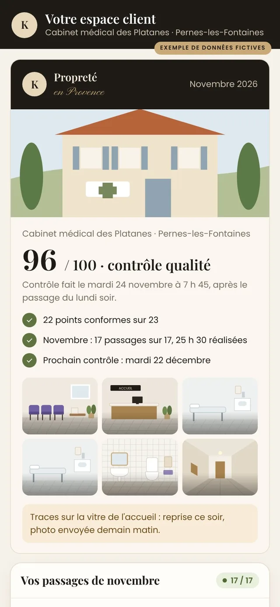
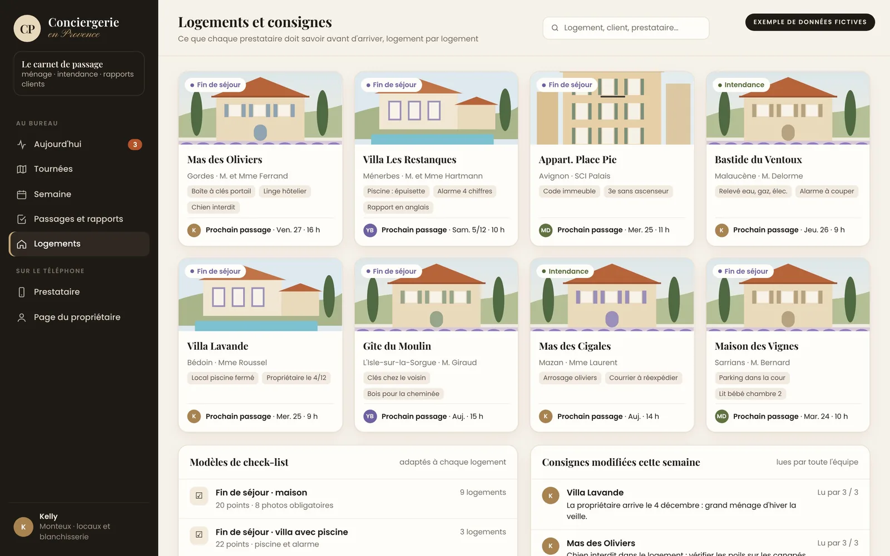

Concept pour Kelly · nettoyage des locaux professionnels
Vos agents, vos sites, vos heures : un seul carnet d'entretien.
Kelly, vous m'avez précisé que l'outil est pour votre entreprise de nettoyage chez les professionnels : bureaux, cabinets médicaux, parties communes, espaces d'accueil du public. Voici à quoi il pourrait ressembler, du pointage de l'agent sur place jusqu'aux heures du mois, prêtes pour la paie et la facture.
Concept réalisé à partir de votre message. Toutes les données affichées sont fictives ; le nom et les couleurs de votre entreprise remplaceront ceux de la démonstration.


L'outil que je recherche n'est pas forcément pour la conciergerie, mais pour mon entreprise de nettoyage chez les professionnels : bureaux, cabinets médicaux, parties communes, espaces d'accueil au public.
Des contrats récurrents à heures fixes, souvent tôt le matin ou le soir, des agents seuls sur des sites différents, des absences à couvrir vite, et des clients qui veulent la preuve que le travail est fait.
Un carnet d'entretien partagé : pointage et check-list sur le téléphone de l'agent, la journée de toute l'équipe pour vous, le contrôle qualité, et les heures du mois prêtes pour la paie et la facture.
Toute l'équipe, de 6 h à 21 h, sur un seul écran
Les interventions du jour et, en direct, ce qui arrive : arrivées et départs pointés, check-lists validées, photos reçues, demandes des clients.
- De l'intervention prévue aux heures validées, site par site
- Ce qui demande votre œil : un départ non pointé, une réclamation, un contrôle à relire
- Les messages de l'équipe au même endroit, rattachés au bon site

Pointer, cocher, photographier
L'agent ouvre sa soirée : l'accès, le réassort à poser, la consigne du client. Sur place, il pointe son arrivée, coche zone par zone et prend la photo là où vous la demandez.
- Une check-list par type de local : bureaux, cabinet médical, parties communes, accueil du public
- Un bouton pour signaler un produit manquant, un dégât, un accès impossible
- Le départ pointé : les heures réalisées remontent toutes seules

La preuve du travail fait, pour vos clients
Une grille de contrôle par type de local, les photos horodatées, l'écart relevé et sa reprise. Le client reçoit sa note et retrouve dans son espace ses passages et ses heures du mois.
- Un écart part en priorité sur la check-list du passage suivant
- Le client signale une demande avec une photo, elle arrive directement chez vous
- Jamais vos échanges internes : seulement ce que vous choisissez de montrer


Une absence couverte en quelques minutes
Chaque agent voit sa ligne sur son téléphone. Quand quelqu'un est absent, ses interventions se reportent sur un collègue ou sur vous, et les clients concernés sont prévenus.
- Les remplacements visibles d'un coup d'œil
- Les heures planifiées comparées aux heures prévues aux contrats
- Les contrôles qualité de la semaine, site par site

Chaque contrat a sa fiche, et ses heures du mois
Fréquence, heures prévues, accès, consignes du client, modèle de check-list. Les heures réalisées, issues des pointages, se comparent au contrat au fil du mois.
- Les codes d'accès et d'alarme ne s'affichent que sur place
- Un écart d'heures se voit avant la facture, pas après
- En fin de mois : facture par client et relevé d'heures par agent

Qui est où, avec quels produits
Les tournées du jour sur la carte du Vaucluse, au départ de vos locaux : l'ordre des sites, les kilomètres, et le réassort à livrer.
- Une couleur par agent, l'intervention en cours bien visible
- Un produit signalé manquant s'ajoute à la liste de réassort du lendemain
- Les kilomètres de chaque tournée, pour les frais de déplacement

Comment ça se branche
Vos outils restent en place. Le carnet les relie.
Rien n'est à ressaisir : le carnet se branche sur ce qui existe déjà et supprime les doubles saisies. Le détail des branchements se vérifie ensemble, outil par outil.
Ce qui est inclus, outil par outil
Il existe de bons logiciels pour les entreprises de nettoyage. Voici, fonction par fonction, ce que comprendrait votre outil sur mesure et ce qu'annoncent quatre logiciels courants. « Non annoncé » veut dire que la fonction n'apparaît pas sur le site de l'éditeur, pas forcément qu'elle n'existe pas.
| Fonction | Votre outil sur mesureproposition QME, par lots | PROPRETlogiciel dédié à la propreté | Organiloggestion d'interventions | Connecteamplanning et pointage | Kizeo Formsformulaires mobiles |
|---|---|---|---|---|---|
| Application mobile pour les agents | Oui LOT 1 | Oui (Android, iOS) | Oui, hors ligne | Oui | Oui, hors ligne |
| Pointage arrivée et départ sur le site | QR code ou badge NFC posé sur le site, sans suivi GPS LOT 1 | Début et fin de service dans l'appli, géolocalisation ; QR et NFC non annoncés | QR code, appli, code PIN ; GPS activable | GPS avec zone autorisée, NFC | Non annoncé |
| Check-lists par type de local, avec photos | Oui, photos obligatoires là où vous les demandez LOT 1 | Cahier de consignes par site ; photos non annoncées | Photos et champs personnalisés ; check-lists non annoncées | Oui, photos avant et après | Formulaires sur mesure, photos |
| Heures prévues au contrat et réalisées | Par site et par agent, au fil du mois LOT 1 | Suivi du temps de travail ; prévu et réalisé non annoncés | Temps passé contre prévu, par contrat | Prévu contre réalisé | Non annoncé |
| Relevé d'heures pour la paie | Relevé par agent, au format de votre comptable LOT 1 | Export de prépaie (source tierce) | Export CSV des pointages | Export et intégrations paie (outils surtout anglophones) | Export des données |
| Planning, absences et remplacements | Oui, client prévenu du remplacement LOT 2 | Planning ; remplacements (page dédiée) | Planning et absences ; remplacements non annoncés | Planning, remplacements, échanges | Non annoncé |
| Grille de contrôle qualité notée | Par type de local, avec note et suivi des écarts LOT 3 | Non annoncé (module « Supervision » non détaillé) | Questionnaires de satisfaction (offre supérieure) | Non annoncé | À construire soi-même en formulaire |
| Rapport au client, à votre nom | PDF à votre nom et à vos couleurs LOT 3 | Non annoncé | Rapport PDF personnalisable, avec logo | Rapports automatiques ; logo non annoncé | Rapports personnalisés |
| Espace client | Passages, heures, demandes avec photo LOT 3 | Accès client | Factures, interventions, plannings | Non annoncé | Non annoncé |
| Devis et facturation | Non : récapitulatif par client vers votre outil de facturation | Oui, facturation électronique prévue | Oui, facturation électronique (offre supérieure) | Non annoncé | Non annoncé |
| Consommables et stock | Liste de réassort par site OPTION | Gestion des stocks | Stock, multi-stock | Non annoncé | Non annoncé |
| Conciergerie dans le même outil | Passages et rapports propriétaires OPTION | Non annoncé | Possible, outil d'interventions généraliste | Possible, outil généraliste | Possible, par formulaires |
| Adapté à votre façon de travailler | Construit pour vous, évolutif | Non annoncé | Champs, rôles, API, modules (offres supérieures) | Paramétrable | Formulaires sur mesure |
| Interface en français | Oui | Oui | Oui | Non confirmé (site en anglais) | Oui |
| Où sont vos données | Sur vos propres comptes, serveurs en Europe | Cloud, pays non précisé, RGPD annoncé | Hébergées en France | Pays non précisé, RGPD annoncé | Hébergées en France |
| Abonnement | Aucun abonnement obligatoire | Oui | Oui, par utilisateur | Oui, formules par utilisateur | Oui, par utilisateur |
✓Inclus~Partiel, en option ou à configurer–Non annoncé par l'éditeurLOT 1, 2, 3, OPTION : étape de votre outil qui l'inclut
Si votre façon de travailler est standard et que vous voulez surtout les devis et la facturation au même endroit, un logiciel comme Organilog ou PROPRET est un choix sérieux, et je vous le dirai franchement.
Si vous voulez vos check-lists et votre contrôle qualité exactement comme vous travaillez, des rapports clients à votre nom, nettoyage et conciergerie au même endroit, aucun abonnement, et vos données chez vous.
Informations publiées par les éditeurs sur leurs sites (propret.fr, organilog.com, connecteam.com, kizeo-forms.com), relevées le 24 novembre 2026 ; deux points PROPRET (export de prépaie, remplacements) viennent d'un comparateur tiers. Les fonctions évoluent : à vérifier auprès des éditeurs. Ce tableau ne constitue pas un avis sur la qualité de ces logiciels.
On commence par ce qui vous fait gagner le plus de temps
Le téléphone de l'agent
Pointage, check-list photo et signalements, avec vos modèles par type de local.
Les heures du mois
Réalisé contre contrat, prêt pour la paie et la facture.
Aujourd'hui, planning et absences
La journée de l'équipe et les remplacements, sans appels.
Contrôle qualité et espace client
La grille, le rapport et l'espace où vos clients suivent leurs passages.
Un outil construit autour de votre façon de travailler
Ce concept est un point de départ : chaque écran s'adapte à votre organisation, à vos contrats et à vos outils, et se teste en conditions réelles avec vos agents avant d'aller plus loin.